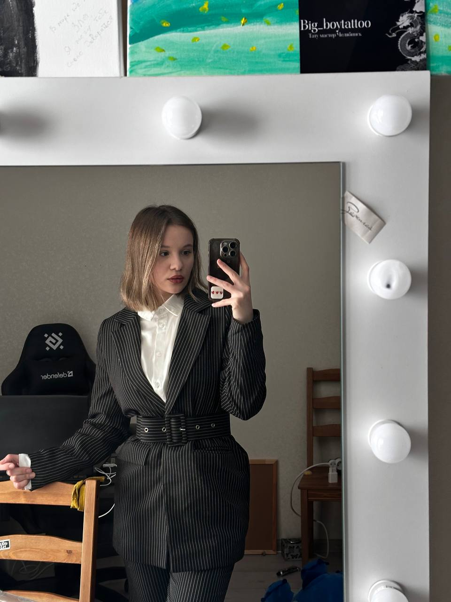

Меня зовут Ксения, мне 21 год. Я увлекаюсь дизайном, книгами и музыкой. Люблю создавать красивые интерфейсы и решать нестандартные задачи. Этот сайт — мой маленький уголок в интернете, где я собираю всё, что мне интересно.
Свободное время провожу за практикой дизайна афиш и логотипов, книгами и просмотрами сериалов.